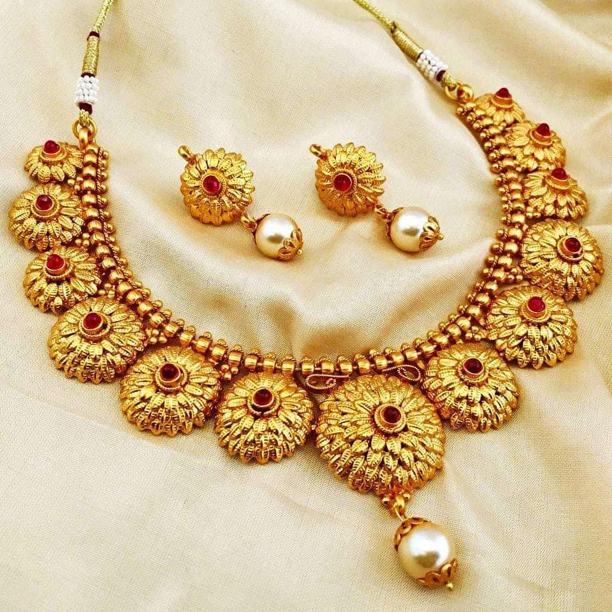
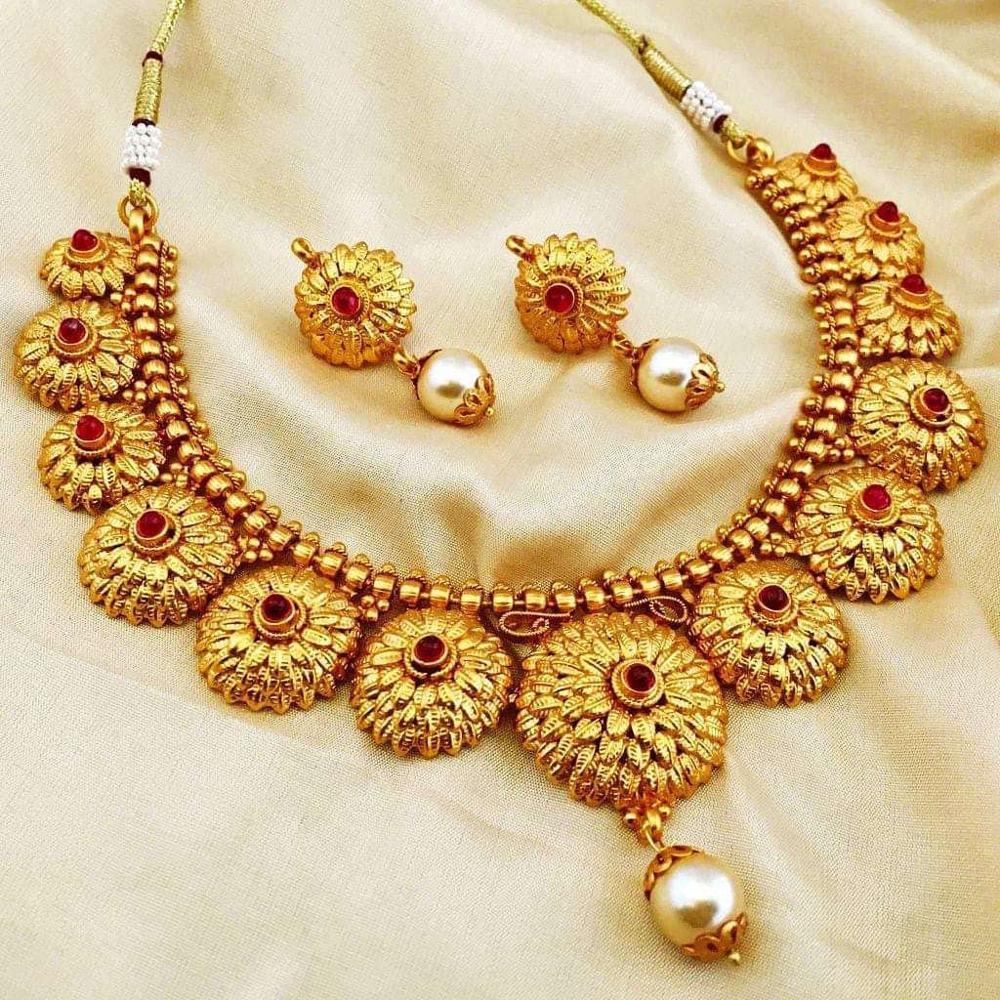

When it comes to jewelry services few jewelers are as equipped to satisfy your needs like the team at Jewelry Designs. With a comprehensive staff of designers, jewelers, gemologists, and consultants whose life passion is the creation of fine jewelry, you can be certain that your precious possessions are in good hands.
Face it; the primary concern most people have when commissioning jewelry services is trust. Closely held by the managing team, our company has been trusted by tens of thousands of satisfied customers since it was founded in 1980.
jewellery information
Many clients have found that one of the most useful jewelry services we provide is information, and since it is free, everyone can enjoy it. We are always available to discuss your needs or provide advice about family heirlooms or proper jewelry care. Our consultants can advise you on gemological questions or share information on diamond grading, and assist you in evaluating your gemstones. Our artisans are always eager to share design ideas and help you to organize your old gold and gemstones to plan future projects. Experienced master jewelers are always on hand to recommend ways to restore your precious vintage items. Chances are, someone in our organization has the expertise and knowledge to advise you on any topic.


 
